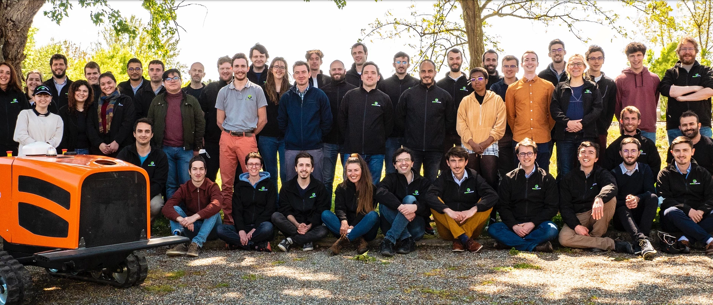
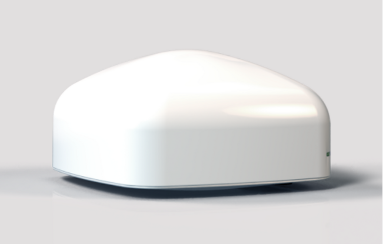
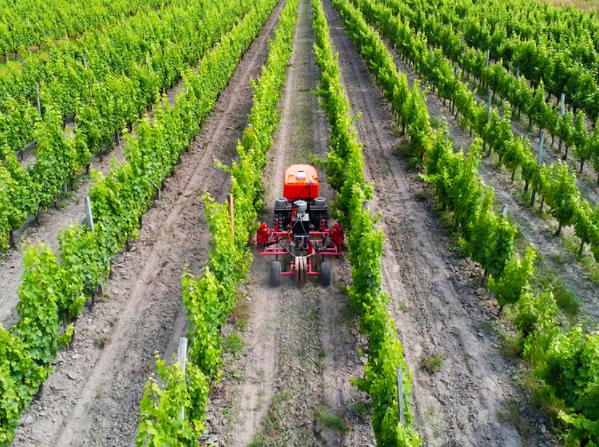

Je vais vous présenter la start-up Agreenculture Vous trouverez ici, diverses informations tels-que : une présentation, son modèle économique, sa chaîne de valeur, une analyse des diagnostics externes et internes et une comparaison des choix stratégiques
Vous découvrirez dans cette partie, l'histoire de Agreenculture
Agreenculture est une start-up française située à Toulouse, qui conçoit,
développe et produit des solutions autonomes pour le monde agricole.
Avec une expérience de 13 ans dans la recherche et le développement dans
le domaine du positionnement et du guidage par satellite, il ont investi ce
savoir-faire dans le développement d’un robots qui entretient des parcelles
de cultures pérennes en totale autonomie. Leur comité, crée en 2020 est animé
par cinq volontaires dont les activités se déclinent sous 5 pôles différent :
Sens de l’entreprise, Choix de l’entreprise, Vie de l’entreprise,
Relations et partenariats de l’entreprise, Animations des caf’éthiques.

Étude du modèle économique
Vous découvrirez dans cette partie, le modèle économique de Agreenculture
Produit proposés
La start-up Agreenculture propose à la fois 2 innovations technologiques.
Tout d’abord, elle propose un robot agricole appelé CEOL qui va permettre de
faire gagner du temps aux agriculteurs. En effet, celui-ci ne nécessite aucune
aide humaine et peux travailler en total autonomie pendant plusieurs heures.
Pour exemple, 1 journée composée de 8 heures de conduite d’un tracteur par
un agriculteur se transforme en seulement 1 heure avec leur robots. De plus,
ce robot, en plus de consommer beaucoup moins de gasoil qu’un tracteur qui
effectuera les même actions, possède un système de guidage développer par la
même start-up. Celui permettra une précision au centimètre grâce à un système
de guidage par positionnement GNSS RTK. Contenu dans cette AGC BOX,
il calcul la meilleurs trajectoire du terrain tout en évitant les obstacles.


Principales dépenses
Tout comme toutes les autres entreprises, la start-up Agreenculture
doit effectuer certaines dépenses. Elles sont tous d’abord, les dépenses
fixes qui sont : les impôts et les taxes, les loyer et entretien des locaux,
et les frais bancaires. Ensuite, il y a dépenses qui sont dites variables,
elles sont : les salaires des salariés, et l’achat de stocks
(plus précisément, les matières premières).
Principales recettes
La principale source de recettes de la start-up Agreenculture est, la vente. Cette start-up espère pouvoir commercialiser leur robots à partir de 2023.
Type de modèle adopté
Les modèle adopté par cette entreprise est, la production en propre,
c’est-à-dire, que Agreenculture va concevoir son produit,
en l’occurrence ces robots, et les mettre en vente, mais aussi la publicité. En effet cette start-up utilise plusieurs annonces sur différents sites collaborateurs pour se faire connaître :